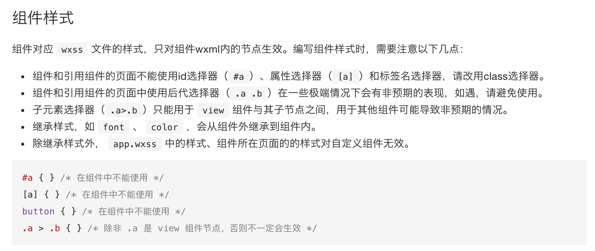
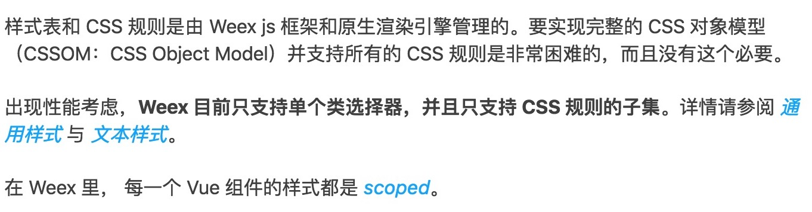

<!DOCTYPE HTML>
<html lang="" >
    <head>
        <meta charset="UTF-8">
        <meta content="text/html; charset=utf-8" http-equiv="Content-Type">
        <title>CMSS · GitBook</title>
        <meta http-equiv="X-UA-Compatible" content="IE=edge" />
        <meta name="description" content="">
        <meta name="generator" content="GitBook 3.2.3">
        
        
        
    
    <link rel="stylesheet" href="../gitbook/style.css">

    
            
                
                <link rel="stylesheet" href="../gitbook/gitbook-plugin-expandable-chapters-small/expandable-chapters-small.css">
                
            
                
                <link rel="stylesheet" href="../gitbook/gitbook-plugin-insert-logo/plugin.css">
                
            
                
                <link rel="stylesheet" href="../gitbook/gitbook-plugin-highlight/website.css">
                
            
                
                <link rel="stylesheet" href="../gitbook/gitbook-plugin-search/search.css">
                
            
                
                <link rel="stylesheet" href="../gitbook/gitbook-plugin-fontsettings/website.css">
                
            
        

    

    
        
    
        
    
        
    
        
    
        
    
        
    

        
    
    
    <meta name="HandheldFriendly" content="true"/>
    <meta name="viewport" content="width=device-width, initial-scale=1, user-scalable=no">
    <meta name="apple-mobile-web-app-capable" content="yes">
    <meta name="apple-mobile-web-app-status-bar-style" content="black">
    <link rel="apple-touch-icon-precomposed" sizes="152x152" href="../gitbook/images/apple-touch-icon-precomposed-152.png">
    <link rel="shortcut icon" href="../gitbook/images/favicon.ico" type="image/x-icon">

    
    <link rel="next" href="common_style.html" />
    
    
    <link rel="prev" href="view.html" />
    

    </head>
    <body>
        
<div class="book">
    <div class="book-summary">
        
            
<div id="book-search-input" role="search">
    <input type="text" placeholder="Type to search" />
</div>

            
                <nav role="navigation">
                


<ul class="summary">
    
    

    

    
        
        
    
        <li class="chapter " data-level="1.1" data-path="../">
            
                <a href="../">
            
                    
                    介绍
            
                </a>
            

            
        </li>
    
        <li class="chapter " data-level="1.2" data-path="../quick_start/default.html">
            
                <a href="../quick_start/default.html">
            
                    
                    简易教程
            
                </a>
            

            
        </li>
    
        <li class="chapter " data-level="1.3" data-path="../framework/framework.html">
            
                <a href="../framework/framework.html">
            
                    
                    框架
            
                </a>
            

            
            <ul class="articles">
                
    
        <li class="chapter " data-level="1.3.1" data-path="../quick_start/setup.html">
            
                <a href="../quick_start/setup.html">
            
                    
                    安装启动
            
                </a>
            

            
        </li>
    
        <li class="chapter " data-level="1.3.2" data-path="../quick_start/cml_cmd.html">
            
                <a href="../quick_start/cml_cmd.html">
            
                    
                    命令行
            
                </a>
            

            
        </li>
    
        <li class="chapter " data-level="1.3.3" data-path="../framework/structure.html">
            
                <a href="../framework/structure.html">
            
                    
                    结构
            
                </a>
            

            
            <ul class="articles">
                
    
        <li class="chapter " data-level="1.3.3.1" data-path="../framework/structure.html">
            
                <a href="../framework/structure.html">
            
                    
                    项目目录结构
            
                </a>
            

            
        </li>
    
        <li class="chapter " data-level="1.3.3.2" data-path="../framework/cml_file.html">
            
                <a href="../framework/cml_file.html">
            
                    
                    cml文件结构
            
                </a>
            

            
        </li>
    

            </ul>
            
        </li>
    
        <li class="chapter " data-level="1.3.4" data-path="../framework/config.html">
            
                <a href="../framework/config.html">
            
                    
                    配置
            
                </a>
            

            
            <ul class="articles">
                
    
        <li class="chapter " data-level="1.3.4.1" data-path="../framework/config.html">
            
                <a href="../framework/config.html">
            
                    
                    项目配置
            
                </a>
            

            
        </li>
    
        <li class="chapter " data-level="1.3.4.2" data-path="../framework/json.html">
            
                <a href="../framework/json.html">
            
                    
                    组件配置
            
                </a>
            

            
        </li>
    
        <li class="chapter " data-level="1.3.4.3" data-path="../framework/router.html">
            
                <a href="../framework/router.html">
            
                    
                    路由配置
            
                </a>
            

            
        </li>
    

            </ul>
            
        </li>
    
        <li class="chapter " data-level="1.3.5" data-path="../framework/mock.html">
            
                <a href="../framework/mock.html">
            
                    
                    工程化
            
                </a>
            

            
            <ul class="articles">
                
    
        <li class="chapter " data-level="1.3.5.1" data-path="../framework/mock.html">
            
                <a href="../framework/mock.html">
            
                    
                    数据 mock
            
                </a>
            

            
        </li>
    
        <li class="chapter " data-level="1.3.5.2" data-path="../framework/source_location.html">
            
                <a href="../framework/source_location.html">
            
                    
                    资源定位
            
                </a>
            

            
        </li>
    
        <li class="chapter " data-level="1.3.5.3" data-path="../framework/devproxy.html">
            
                <a href="../framework/devproxy.html">
            
                    
                    代理调试
            
                </a>
            

            
        </li>
    
        <li class="chapter " data-level="1.3.5.4" data-path="../framework/source_optimize.md">
            
                <span>
            
                    
                    资源优化
            
                </a>
            

            
        </li>
    
        <li class="chapter " data-level="1.3.5.5" data-path="../framework/chameleon_url.html">
            
                <a href="../framework/chameleon_url.html">
            
                    
                    Chameleon URL
            
                </a>
            

            
        </li>
    

            </ul>
            
        </li>
    
        <li class="chapter " data-level="1.3.6" data-path="../framework/polymorphism/intro.html">
            
                <a href="../framework/polymorphism/intro.html">
            
                    
                    多态协议
            
                </a>
            

            
            <ul class="articles">
                
    
        <li class="chapter " data-level="1.3.6.1" data-path="../framework/polymorphism/api.html">
            
                <a href="../framework/polymorphism/api.html">
            
                    
                    接口多态
            
                </a>
            

            
        </li>
    
        <li class="chapter " data-level="1.3.6.2" data-path="../framework/polymorphism/component.html">
            
                <a href="../framework/polymorphism/component.html">
            
                    
                    组件多态
            
                </a>
            

            
        </li>
    
        <li class="chapter " data-level="1.3.6.3" data-path="../framework/polymorphism/build.html">
            
                <a href="../framework/polymorphism/build.html">
            
                    
                    构建多态
            
                </a>
            

            
        </li>
    
        <li class="chapter " data-level="1.3.6.4" data-path="../framework/polymorphism/config.html">
            
                <a href="../framework/polymorphism/config.html">
            
                    
                    配置多态
            
                </a>
            

            
        </li>
    

            </ul>
            
        </li>
    
        <li class="chapter " data-level="1.3.7" data-path="../framework/polymorphism/check.html">
            
                <a href="../framework/polymorphism/check.html">
            
                    
                    规范与校验
            
                </a>
            

            
            <ul class="articles">
                
    
        <li class="chapter " data-level="1.3.7.1" data-path="../framework/polymorphism/check.html">
            
                <a href="../framework/polymorphism/check.html">
            
                    
                    接口语法校验
            
                </a>
            

            
        </li>
    
        <li class="chapter " data-level="1.3.7.2" data-path="../framework/global_check.html">
            
                <a href="../framework/global_check.html">
            
                    
                    全局变量校验
            
                </a>
            

            
        </li>
    
        <li class="chapter " data-level="1.3.7.3" data-path="../framework/global_check.html">
            
                <a href="../framework/global_check.html">
            
                    
                    代码规范校验
            
                </a>
            

            
        </li>
    

            </ul>
            
        </li>
    

            </ul>
            
        </li>
    
        <li class="chapter " data-level="1.4" data-path="view.html">
            
                <a href="view.html">
            
                    
                    视图层
            
                </a>
            

            
            <ul class="articles">
                
    
        <li class="chapter active" data-level="1.4.1" data-path="cmss.html">
            
                <a href="cmss.html">
            
                    
                    CMSS
            
                </a>
            

            
            <ul class="articles">
                
    
        <li class="chapter " data-level="1.4.1.1" data-path="common_style.html">
            
                <a href="common_style.html">
            
                    
                    通用样式
            
                </a>
            

            
        </li>
    
        <li class="chapter " data-level="1.4.1.2" data-path="text_style.html">
            
                <a href="text_style.html">
            
                    
                    文本样式
            
                </a>
            

            
        </li>
    
        <li class="chapter " data-level="1.4.1.3" data-path="css_unit.html">
            
                <a href="css_unit.html">
            
                    
                    CSS单位
            
                </a>
            

            
        </li>
    
        <li class="chapter " data-level="1.4.1.4" data-path="colorname_list.html">
            
                <a href="colorname_list.html">
            
                    
                    支持的颜色名称列表
            
                </a>
            

            
        </li>
    

            </ul>
            
        </li>
    
        <li class="chapter " data-level="1.4.2" data-path="cml.html">
            
                <a href="cml.html">
            
                    
                    CML-标准语法
            
                </a>
            

            
            <ul class="articles">
                
    
        <li class="chapter " data-level="1.4.2.1" data-path="base_component.html">
            
                <a href="base_component.html">
            
                    
                    基本组件
            
                </a>
            

            
        </li>
    
        <li class="chapter " data-level="1.4.2.2" data-path="databind.html">
            
                <a href="databind.html">
            
                    
                    数据绑定
            
                </a>
            

            
        </li>
    
        <li class="chapter " data-level="1.4.2.3" data-path="condition.html">
            
                <a href="condition.html">
            
                    
                    条件渲染
            
                </a>
            

            
        </li>
    
        <li class="chapter " data-level="1.4.2.4" data-path="iterator.html">
            
                <a href="iterator.html">
            
                    
                    列表渲染
            
                </a>
            

            
        </li>
    
        <li class="chapter " data-level="1.4.2.5" data-path="event.html">
            
                <a href="event.html">
            
                    
                    事件
            
                </a>
            

            
        </li>
    
        <li class="chapter " data-level="1.4.2.6" data-path="directive.html">
            
                <a href="directive.html">
            
                    
                    指令
            
                </a>
            

            
        </li>
    

            </ul>
            
        </li>
    
        <li class="chapter " data-level="1.4.3" data-path="vue.html">
            
                <a href="vue.html">
            
                    
                    CML-类vue语法
            
                </a>
            

            
            <ul class="articles">
                
    
        <li class="chapter " data-level="1.4.3.1" data-path="databind-vue.html">
            
                <a href="databind-vue.html">
            
                    
                    数据绑定
            
                </a>
            

            
        </li>
    
        <li class="chapter " data-level="1.4.3.2" data-path="condition-vue.html">
            
                <a href="condition-vue.html">
            
                    
                    条件渲染
            
                </a>
            

            
        </li>
    
        <li class="chapter " data-level="1.4.3.3" data-path="iterator-vue.html">
            
                <a href="iterator-vue.html">
            
                    
                    列表渲染
            
                </a>
            

            
        </li>
    
        <li class="chapter " data-level="1.4.3.4" data-path="event-vue.html">
            
                <a href="event-vue.html">
            
                    
                    事件
            
                </a>
            

            
        </li>
    
        <li class="chapter " data-level="1.4.3.5" data-path="directive-vue.html">
            
                <a href="directive-vue.html">
            
                    
                    指令
            
                </a>
            

            
        </li>
    
        <li class="chapter " data-level="1.4.3.6" data-path="css-vue.html">
            
                <a href="css-vue.html">
            
                    
                    样式语法规范
            
                </a>
            

            
        </li>
    
        <li class="chapter " data-level="1.4.3.7" data-path="not-support-vue.html">
            
                <a href="not-support-vue.html">
            
                    
                    不支持的vue语法
            
                </a>
            

            
        </li>
    

            </ul>
            
        </li>
    

            </ul>
            
        </li>
    
        <li class="chapter " data-level="1.5" data-path="../logic/logic.html">
            
                <a href="../logic/logic.html">
            
                    
                    逻辑层
            
                </a>
            

            
            <ul class="articles">
                
    
        <li class="chapter " data-level="1.5.1" data-path="../logic/lifecycle.html">
            
                <a href="../logic/lifecycle.html">
            
                    
                    生命周期
            
                </a>
            

            
        </li>
    
        <li class="chapter " data-level="1.5.2" data-path="../logic/computed.html">
            
                <a href="../logic/computed.html">
            
                    
                    计算属性 computed
            
                </a>
            

            
        </li>
    
        <li class="chapter " data-level="1.5.3" data-path="../logic/watch.html">
            
                <a href="../logic/watch.html">
            
                    
                    侦听属性 watch
            
                </a>
            

            
        </li>
    
        <li class="chapter " data-level="1.5.4" data-path="../logic/store.html">
            
                <a href="../logic/store.html">
            
                    
                    数据管理
            
                </a>
            

            
            <ul class="articles">
                
    
        <li class="chapter " data-level="1.5.4.1" data-path="../logic/store/start.html">
            
                <a href="../logic/store/start.html">
            
                    
                    开始
            
                </a>
            

            
        </li>
    
        <li class="chapter " data-level="1.5.4.2" data-path="../logic/store/state.html">
            
                <a href="../logic/store/state.html">
            
                    
                    state
            
                </a>
            

            
        </li>
    
        <li class="chapter " data-level="1.5.4.3" data-path="../logic/store/getters.html">
            
                <a href="../logic/store/getters.html">
            
                    
                    getters
            
                </a>
            

            
        </li>
    
        <li class="chapter " data-level="1.5.4.4" data-path="../logic/store/mutation.html">
            
                <a href="../logic/store/mutation.html">
            
                    
                    mutation
            
                </a>
            

            
        </li>
    
        <li class="chapter " data-level="1.5.4.5" data-path="../logic/store/action.html">
            
                <a href="../logic/store/action.html">
            
                    
                    action
            
                </a>
            

            
        </li>
    
        <li class="chapter " data-level="1.5.4.6" data-path="../logic/store/module.html">
            
                <a href="../logic/store/module.html">
            
                    
                    子模块
            
                </a>
            

            
        </li>
    
        <li class="chapter " data-level="1.5.4.7" data-path="../logic/store/structure.html">
            
                <a href="../logic/store/structure.html">
            
                    
                    目录结构
            
                </a>
            

            
        </li>
    

            </ul>
            
        </li>
    

            </ul>
            
        </li>
    
        <li class="chapter " data-level="1.6" data-path="../api/api.html">
            
                <a href="../api/api.html">
            
                    
                    API
            
                </a>
            

            
            <ul class="articles">
                
    
        <li class="chapter " data-level="1.6.1" data-path="../api/request.html">
            
                <a href="../api/request.html">
            
                    
                    网络请求
            
                </a>
            

            
        </li>
    
        <li class="chapter " data-level="1.6.2" data-path="../api/navigate.html">
            
                <a href="../api/navigate.html">
            
                    
                    路由导航
            
                </a>
            

            
        </li>
    
        <li class="chapter " data-level="1.6.3" data-path="../api/storage.html">
            
                <a href="../api/storage.html">
            
                    
                    数据存储
            
                </a>
            

            
        </li>
    
        <li class="chapter " data-level="1.6.4" data-path="../api/location.html">
            
                <a href="../api/location.html">
            
                    
                    地理位置
            
                </a>
            

            
        </li>
    
        <li class="chapter " data-level="1.6.5" data-path="../api/system.html">
            
                <a href="../api/system.html">
            
                    
                    系统信息
            
                </a>
            

            
        </li>
    
        <li class="chapter " data-level="1.6.6" data-path="../api/launchOptions.html">
            
                <a href="../api/launchOptions.html">
            
                    
                    启动参数
            
                </a>
            

            
        </li>
    
        <li class="chapter " data-level="1.6.7" data-path="../api/userinfo.html">
            
                <a href="../api/userinfo.html">
            
                    
                    用户信息
            
                </a>
            

            
        </li>
    
        <li class="chapter " data-level="1.6.8" data-path="../api/getRect.html">
            
                <a href="../api/getRect.html">
            
                    
                    元素属性
            
                </a>
            

            
        </li>
    
        <li class="chapter " data-level="1.6.9" data-path="../api/px.html">
            
                <a href="../api/px.html">
            
                    
                    单位转换
            
                </a>
            

            
        </li>
    
        <li class="chapter " data-level="1.6.10" data-path="../api/createAnimation/main.html">
            
                <a href="../api/createAnimation/main.html">
            
                    
                    动画
            
                </a>
            

            
            <ul class="articles">
                
    
        <li class="chapter " data-level="1.6.10.1" data-path="../api/createAnimation/createAnimation.html">
            
                <a href="../api/createAnimation/createAnimation.html">
            
                    
                    cml.createAnimation
            
                </a>
            

            
        </li>
    
        <li class="chapter " data-level="1.6.10.2" data-path="../api/createAnimation/animation/main.html">
            
                <a href="../api/createAnimation/animation/main.html">
            
                    
                    Animation
            
                </a>
            

            
            <ul class="articles">
                
    
        <li class="chapter " data-level="1.6.10.2.1" data-path="../api/createAnimation/animation/step.html">
            
                <a href="../api/createAnimation/animation/step.html">
            
                    
                    .step
            
                </a>
            

            
        </li>
    
        <li class="chapter " data-level="1.6.10.2.2" data-path="../api/createAnimation/animation/rotate.html">
            
                <a href="../api/createAnimation/animation/rotate.html">
            
                    
                    .rotate
            
                </a>
            

            
        </li>
    
        <li class="chapter " data-level="1.6.10.2.3" data-path="../api/createAnimation/animation/rotateX.html">
            
                <a href="../api/createAnimation/animation/rotateX.html">
            
                    
                    .rotateX
            
                </a>
            

            
        </li>
    
        <li class="chapter " data-level="1.6.10.2.4" data-path="../api/createAnimation/animation/rotateY.html">
            
                <a href="../api/createAnimation/animation/rotateY.html">
            
                    
                    .rotateY
            
                </a>
            

            
        </li>
    
        <li class="chapter " data-level="1.6.10.2.5" data-path="../api/createAnimation/animation/rotateZ.html">
            
                <a href="../api/createAnimation/animation/rotateZ.html">
            
                    
                    .rotateZ
            
                </a>
            

            
        </li>
    
        <li class="chapter " data-level="1.6.10.2.6" data-path="../api/createAnimation/animation/scale.html">
            
                <a href="../api/createAnimation/animation/scale.html">
            
                    
                    .scale
            
                </a>
            

            
        </li>
    
        <li class="chapter " data-level="1.6.10.2.7" data-path="../api/createAnimation/animation/scaleX.html">
            
                <a href="../api/createAnimation/animation/scaleX.html">
            
                    
                    .scaleX
            
                </a>
            

            
        </li>
    
        <li class="chapter " data-level="1.6.10.2.8" data-path="../api/createAnimation/animation/scaleY.html">
            
                <a href="../api/createAnimation/animation/scaleY.html">
            
                    
                    .scaleY
            
                </a>
            

            
        </li>
    
        <li class="chapter " data-level="1.6.10.2.9" data-path="../api/createAnimation/animation/translate.html">
            
                <a href="../api/createAnimation/animation/translate.html">
            
                    
                    .translate
            
                </a>
            

            
        </li>
    
        <li class="chapter " data-level="1.6.10.2.10" data-path="../api/createAnimation/animation/translateX.html">
            
                <a href="../api/createAnimation/animation/translateX.html">
            
                    
                    .translateX
            
                </a>
            

            
        </li>
    
        <li class="chapter " data-level="1.6.10.2.11" data-path="../api/createAnimation/animation/translateY.html">
            
                <a href="../api/createAnimation/animation/translateY.html">
            
                    
                    .translateY
            
                </a>
            

            
        </li>
    
        <li class="chapter " data-level="1.6.10.2.12" data-path="../api/createAnimation/animation/opacity.html">
            
                <a href="../api/createAnimation/animation/opacity.html">
            
                    
                    .opacity
            
                </a>
            

            
        </li>
    
        <li class="chapter " data-level="1.6.10.2.13" data-path="../api/createAnimation/animation/backgroundColor.html">
            
                <a href="../api/createAnimation/animation/backgroundColor.html">
            
                    
                    .backgroundColor
            
                </a>
            

            
        </li>
    
        <li class="chapter " data-level="1.6.10.2.14" data-path="../api/createAnimation/animation/width.html">
            
                <a href="../api/createAnimation/animation/width.html">
            
                    
                    .width
            
                </a>
            

            
        </li>
    
        <li class="chapter " data-level="1.6.10.2.15" data-path="../api/createAnimation/animation/height.html">
            
                <a href="../api/createAnimation/animation/height.html">
            
                    
                    .height
            
                </a>
            

            
        </li>
    
        <li class="chapter " data-level="1.6.10.2.16" data-path="../api/createAnimation/animation/export.html">
            
                <a href="../api/createAnimation/animation/export.html">
            
                    
                    .export
            
                </a>
            

            
        </li>
    

            </ul>
            
        </li>
    

            </ul>
            
        </li>
    
        <li class="chapter " data-level="1.6.11" data-path="../api/animationFrame.html">
            
                <a href="../api/animationFrame.html">
            
                    
                    动画关键帧
            
                </a>
            

            
        </li>
    
        <li class="chapter " data-level="1.6.12" data-path="../api/modal.html">
            
                <a href="../api/modal.html">
            
                    
                    交互反馈
            
                </a>
            

            
        </li>
    
        <li class="chapter " data-level="1.6.13" data-path="../api/log.html">
            
                <a href="../api/log.html">
            
                    
                    发送日志
            
                </a>
            

            
        </li>
    
        <li class="chapter " data-level="1.6.14" data-path="../api/title.html">
            
                <a href="../api/title.html">
            
                    
                    设置title
            
                </a>
            

            
        </li>
    
        <li class="chapter " data-level="1.6.15" data-path="../api/open.html">
            
                <a href="../api/open.html">
            
                    
                    打开新的应用页面
            
                </a>
            

            
        </li>
    
        <li class="chapter " data-level="1.6.16" data-path="../api/close.html">
            
                <a href="../api/close.html">
            
                    
                    关闭当前页面
            
                </a>
            

            
        </li>
    
        <li class="chapter " data-level="1.6.17" data-path="../api/chooseImage.html">
            
                <a href="../api/chooseImage.html">
            
                    
                    获取照片
            
                </a>
            

            
        </li>
    
        <li class="chapter " data-level="1.6.18" data-path="../api/clipBoard.html">
            
                <a href="../api/clipBoard.html">
            
                    
                    剪贴板
            
                </a>
            

            
        </li>
    
        <li class="chapter " data-level="1.6.19" data-path="../api/socket.html">
            
                <a href="../api/socket.html">
            
                    
                    WebSocket
            
                </a>
            

            
        </li>
    
        <li class="chapter " data-level="1.6.20" data-path="../api/timer.html">
            
                <a href="../api/timer.html">
            
                    
                    计时器
            
                </a>
            

            
        </li>
    
        <li class="chapter " data-level="1.6.21" data-path="../api/caniuse.html">
            
                <a href="../api/caniuse.html">
            
                    
                    caniuse
            
                </a>
            

            
        </li>
    
        <li class="chapter " data-level="1.6.22" data-path="../api/async.html">
            
                <a href="../api/async.html">
            
                    
                    异步流程控制
            
                </a>
            

            
        </li>
    
        <li class="chapter " data-level="1.6.23" data-path="../api/error_control.html">
            
                <a href="../api/error_control.html">
            
                    
                    异常和错误处理
            
                </a>
            

            
        </li>
    
        <li class="chapter " data-level="1.6.24" data-path="../api/extend.html">
            
                <a href="../api/extend.html">
            
                    
                    如何扩展API方法
            
                </a>
            

            
        </li>
    

            </ul>
            
        </li>
    
        <li class="chapter " data-level="1.7" data-path="../component/component.html">
            
                <a href="../component/component.html">
            
                    
                    组件
            
                </a>
            

            
            <ul class="articles">
                
    
        <li class="chapter " data-level="1.7.1" data-path="../component/base/base.html">
            
                <a href="../component/base/base.html">
            
                    
                    内置组件
            
                </a>
            

            
            <ul class="articles">
                
    
        <li class="chapter " data-level="1.7.1.1" data-path="../component/base/content/content.html">
            
                <a href="../component/base/content/content.html">
            
                    
                    基础内容
            
                </a>
            

            
            <ul class="articles">
                
    
        <li class="chapter " data-level="1.7.1.1.1" data-path="../component/base/content/view.html">
            
                <a href="../component/base/content/view.html">
            
                    
                    view
            
                </a>
            

            
        </li>
    
        <li class="chapter " data-level="1.7.1.1.2" data-path="../component/base/content/text.html">
            
                <a href="../component/base/content/text.html">
            
                    
                    text
            
                </a>
            

            
        </li>
    
        <li class="chapter " data-level="1.7.1.1.3" data-path="../component/base/content/cell.html">
            
                <a href="../component/base/content/cell.html">
            
                    
                    cell
            
                </a>
            

            
        </li>
    
        <li class="chapter " data-level="1.7.1.1.4" data-path="../component/base/content/page.html">
            
                <a href="../component/base/content/page.html">
            
                    
                    page
            
                </a>
            

            
        </li>
    

            </ul>
            
        </li>
    
        <li class="chapter " data-level="1.7.1.2" data-path="../component/base/view/view.html">
            
                <a href="../component/base/view/view.html">
            
                    
                    视图容器
            
                </a>
            

            
            <ul class="articles">
                
    
        <li class="chapter " data-level="1.7.1.2.1" data-path="../component/base/view/scroller.html">
            
                <a href="../component/base/view/scroller.html">
            
                    
                    scroller
            
                </a>
            

            
        </li>
    
        <li class="chapter " data-level="1.7.1.2.2" data-path="../component/base/view/list.html">
            
                <a href="../component/base/view/list.html">
            
                    
                    list
            
                </a>
            

            
        </li>
    

            </ul>
            
        </li>
    
        <li class="chapter " data-level="1.7.1.3" data-path="../component/base/form/form.html">
            
                <a href="../component/base/form/form.html">
            
                    
                    表单组件
            
                </a>
            

            
            <ul class="articles">
                
    
        <li class="chapter " data-level="1.7.1.3.1" data-path="../component/base/form/button.html">
            
                <a href="../component/base/form/button.html">
            
                    
                    button
            
                </a>
            

            
        </li>
    
        <li class="chapter " data-level="1.7.1.3.2" data-path="../component/base/form/input.html">
            
                <a href="../component/base/form/input.html">
            
                    
                    input
            
                </a>
            

            
        </li>
    
        <li class="chapter " data-level="1.7.1.3.3" data-path="../component/base/form/textarea.html">
            
                <a href="../component/base/form/textarea.html">
            
                    
                    textarea
            
                </a>
            

            
        </li>
    
        <li class="chapter " data-level="1.7.1.3.4" data-path="../component/base/form/switch.html">
            
                <a href="../component/base/form/switch.html">
            
                    
                    switch
            
                </a>
            

            
        </li>
    
        <li class="chapter " data-level="1.7.1.3.5" data-path="../component/base/form/radio.html">
            
                <a href="../component/base/form/radio.html">
            
                    
                    radio
            
                </a>
            

            
        </li>
    
        <li class="chapter " data-level="1.7.1.3.6" data-path="../component/base/form/checkbox.html">
            
                <a href="../component/base/form/checkbox.html">
            
                    
                    checkbox
            
                </a>
            

            
        </li>
    

            </ul>
            
        </li>
    
        <li class="chapter " data-level="1.7.1.4" data-path="../component/base/media/media.html">
            
                <a href="../component/base/media/media.html">
            
                    
                    媒体组件
            
                </a>
            

            
            <ul class="articles">
                
    
        <li class="chapter " data-level="1.7.1.4.1" data-path="../component/base/media/image.html">
            
                <a href="../component/base/media/image.html">
            
                    
                    image
            
                </a>
            

            
        </li>
    
        <li class="chapter " data-level="1.7.1.4.2" data-path="../component/base/media/video.html">
            
                <a href="../component/base/media/video.html">
            
                    
                    video
            
                </a>
            

            
        </li>
    

            </ul>
            
        </li>
    

            </ul>
            
        </li>
    
        <li class="chapter " data-level="1.7.2" data-path="../component/expand/expand.html">
            
                <a href="../component/expand/expand.html">
            
                    
                    扩展组件
            
                </a>
            

            
            <ul class="articles">
                
    
        <li class="chapter " data-level="1.7.2.1" data-path="../component/expand/polymorphism/polymorphism.html">
            
                <a href="../component/expand/polymorphism/polymorphism.html">
            
                    
                    多态组件
            
                </a>
            

            
            <ul class="articles">
                
    
        <li class="chapter " data-level="1.7.2.1.1" data-path="../component/expand/polymorphism/c-picker-panel.html">
            
                <a href="../component/expand/polymorphism/c-picker-panel.html">
            
                    
                    c-picker-panel
            
                </a>
            

            
        </li>
    
        <li class="chapter " data-level="1.7.2.1.2" data-path="../component/expand/polymorphism/c-picker-item.html">
            
                <a href="../component/expand/polymorphism/c-picker-item.html">
            
                    
                    c-picker-item
            
                </a>
            

            
        </li>
    
        <li class="chapter " data-level="1.7.2.1.3" data-path="../component/expand/polymorphism/c-refresh.html">
            
                <a href="../component/expand/polymorphism/c-refresh.html">
            
                    
                    c-refresh
            
                </a>
            

            
        </li>
    
        <li class="chapter " data-level="1.7.2.1.4" data-path="../component/expand/polymorphism/c-slider/c-slider.html">
            
                <a href="../component/expand/polymorphism/c-slider/c-slider.html">
            
                    
                    c-slider
            
                </a>
            

            
        </li>
    
        <li class="chapter " data-level="1.7.2.1.5" data-path="../component/expand/polymorphism/c-slider-item/c-slider-item.html">
            
                <a href="../component/expand/polymorphism/c-slider-item/c-slider-item.html">
            
                    
                    c-slider-item
            
                </a>
            

            
        </li>
    

            </ul>
            
        </li>
    
        <li class="chapter " data-level="1.7.2.2" data-path="../component/expand/compound/compound.html">
            
                <a href="../component/expand/compound/compound.html">
            
                    
                    复合组件
            
                </a>
            

            
            <ul class="articles">
                
    
        <li class="chapter " data-level="1.7.2.2.1" data-path="../component/expand/compound/c-toast.html">
            
                <a href="../component/expand/compound/c-toast.html">
            
                    
                    c-toast
            
                </a>
            

            
        </li>
    
        <li class="chapter " data-level="1.7.2.2.2" data-path="../component/expand/compound/c-dialog.html">
            
                <a href="../component/expand/compound/c-dialog.html">
            
                    
                    c-dialog
            
                </a>
            

            
        </li>
    
        <li class="chapter " data-level="1.7.2.2.3" data-path="../component/expand/compound/c-popup.html">
            
                <a href="../component/expand/compound/c-popup.html">
            
                    
                    c-popup
            
                </a>
            

            
        </li>
    
        <li class="chapter " data-level="1.7.2.2.4" data-path="../component/expand/compound/c-tip.html">
            
                <a href="../component/expand/compound/c-tip.html">
            
                    
                    c-tip
            
                </a>
            

            
        </li>
    
        <li class="chapter " data-level="1.7.2.2.5" data-path="../component/expand/compound/c-loading.md">
            
                <span>
            
                    
                    c-loading
            
                </a>
            

            
        </li>
    
        <li class="chapter " data-level="1.7.2.2.6" data-path="../component/expand/compound/c-actionsheet.html">
            
                <a href="../component/expand/compound/c-actionsheet.html">
            
                    
                    c-actionsheet
            
                </a>
            

            
        </li>
    
        <li class="chapter " data-level="1.7.2.2.7" data-path="../component/expand/compound/c-picker.html">
            
                <a href="../component/expand/compound/c-picker.html">
            
                    
                    c-picker
            
                </a>
            

            
        </li>
    
        <li class="chapter " data-level="1.7.2.2.8" data-path="../component/expand/compound/c-checkbox-group.html">
            
                <a href="../component/expand/compound/c-checkbox-group.html">
            
                    
                    c-checkbox-group
            
                </a>
            

            
        </li>
    
        <li class="chapter " data-level="1.7.2.2.9" data-path="../component/expand/compound/c-radio-group.html">
            
                <a href="../component/expand/compound/c-radio-group.html">
            
                    
                    c-radio-group
            
                </a>
            

            
        </li>
    
        <li class="chapter " data-level="1.7.2.2.10" data-path="../component/expand/compound/c-form.md">
            
                <span>
            
                    
                    c-form
            
                </a>
            

            
        </li>
    
        <li class="chapter " data-level="1.7.2.2.11" data-path="../component/expand/compound/c-tab.html">
            
                <a href="../component/expand/compound/c-tab.html">
            
                    
                    c-tab
            
                </a>
            

            
        </li>
    
        <li class="chapter " data-level="1.7.2.2.12" data-path="../component/expand/compound/c-row.html">
            
                <a href="../component/expand/compound/c-row.html">
            
                    
                    c-row
            
                </a>
            

            
        </li>
    
        <li class="chapter " data-level="1.7.2.2.13" data-path="../component/expand/compound/c-col.html">
            
                <a href="../component/expand/compound/c-col.html">
            
                    
                    c-col
            
                </a>
            

            
        </li>
    
        <li class="chapter " data-level="1.7.2.2.14" data-path="../component/expand/compound/c-container.html">
            
                <a href="../component/expand/compound/c-container.html">
            
                    
                    c-container
            
                </a>
            

            
        </li>
    

            </ul>
            
        </li>
    
        <li class="chapter " data-level="1.7.2.3" data-path="../component/expand/native/native.html">
            
                <a href="../component/expand/native/native.html">
            
                    
                    扩展原生组件
            
                </a>
            

            
            <ul class="articles">
                
    
        <li class="chapter " data-level="1.7.2.3.1" data-path="../component/expand/native/richtext.html">
            
                <a href="../component/expand/native/richtext.html">
            
                    
                    richtext
            
                </a>
            

            
        </li>
    

            </ul>
            
        </li>
    

            </ul>
            
        </li>
    
        <li class="chapter " data-level="1.7.3" data-path="../component/custom/custom.html">
            
                <a href="../component/custom/custom.html">
            
                    
                    自定义组件指引
            
                </a>
            

            
            <ul class="articles">
                
    
        <li class="chapter " data-level="1.7.3.1" data-path="../component/custom/develop.html">
            
                <a href="../component/custom/develop.html">
            
                    
                    开发自定义组件
            
                </a>
            

            
        </li>
    
        <li class="chapter " data-level="1.7.3.2" data-path="../component/custom/use.html">
            
                <a href="../component/custom/use.html">
            
                    
                    使用自定义组件
            
                </a>
            

            
        </li>
    
        <li class="chapter " data-level="1.7.3.3" data-path="../component/custom/publish.html">
            
                <a href="../component/custom/publish.html">
            
                    
                    发布自定义组件
            
                </a>
            

            
        </li>
    

            </ul>
            
        </li>
    

            </ul>
            
        </li>
    
        <li class="chapter " data-level="1.8" data-path="../chameleon_client/introduction.html">
            
                <a href="../chameleon_client/introduction.html">
            
                    
                    Native渲染能力接入
            
                </a>
            

            
            <ul class="articles">
                
    
        <li class="chapter " data-level="1.8.1" data-path="../chameleon_client/integration.html">
            
                <a href="../chameleon_client/integration.html">
            
                    
                    Chameleon SDK接入
            
                </a>
            

            
            <ul class="articles">
                
    
        <li class="chapter " data-level="1.8.1.1" data-path="../chameleon_client/ios_integration.html">
            
                <a href="../chameleon_client/ios_integration.html">
            
                    
                    iOS
            
                </a>
            

            
        </li>
    
        <li class="chapter " data-level="1.8.1.2" data-path="../chameleon_client/android_integration.html">
            
                <a href="../chameleon_client/android_integration.html">
            
                    
                    Android
            
                </a>
            

            
        </li>
    

            </ul>
            
        </li>
    
        <li class="chapter " data-level="1.8.2" data-path="../chameleon_client/components.html">
            
                <a href="../chameleon_client/components.html">
            
                    
                    扩展组件&能力
            
                </a>
            

            
        </li>
    
        <li class="chapter " data-level="1.8.3" data-path="../chameleon_client/jsbridge.html">
            
                <a href="../chameleon_client/jsbridge.html">
            
                    
                    H5 JSBridge功能支持
            
                </a>
            

            
        </li>
    
        <li class="chapter " data-level="1.8.4" data-path="../chameleon_client/weex.html">
            
                <a href="../chameleon_client/weex.html">
            
                    
                    WEEX端功能支持
            
                </a>
            

            
        </li>
    
        <li class="chapter " data-level="1.8.5" data-path="../chameleon_client/delta_update.html">
            
                <a href="../chameleon_client/delta_update.html">
            
                    
                    端JS包资源增量更新
            
                </a>
            

            
        </li>
    
        <li class="chapter " data-level="1.8.6" data-path="../chameleon_client/cache.html">
            
                <a href="../chameleon_client/cache.html">
            
                    
                    端JS包资源预加载和缓存
            
                </a>
            

            
        </li>
    
        <li class="chapter " data-level="1.8.7" data-path="../chameleon_client/performance.html">
            
                <a href="../chameleon_client/performance.html">
            
                    
                    性能监控
            
                </a>
            

            
        </li>
    
        <li class="chapter " data-level="1.8.8" data-path="../chameleon_client/gray_release.html">
            
                <a href="../chameleon_client/gray_release.html">
            
                    
                    灰度发布
            
                </a>
            

            
        </li>
    
        <li class="chapter " data-level="1.8.9" data-path="../chameleon_client/exception.html">
            
                <a href="../chameleon_client/exception.html">
            
                    
                    自动降级
            
                </a>
            

            
        </li>
    

            </ul>
            
        </li>
    
        <li class="chapter " data-level="1.9" data-path="../terminal/io.html">
            
                <a href="../terminal/io.html">
            
                    
                    导入与导出
            
                </a>
            

            
            <ul class="articles">
                
    
        <li class="chapter " data-level="1.9.1" data-path="../framework/progressive.html">
            
                <a href="../framework/progressive.html">
            
                    
                    渐进式接入
            
                </a>
            

            
            <ul class="articles">
                
    
        <li class="chapter " data-level="1.9.1.1" data-path="../framework/webpack_plugin.html">
            
                <a href="../framework/webpack_plugin.html">
            
                    
                    webpack集成
            
                </a>
            

            
        </li>
    
        <li class="chapter " data-level="1.9.1.2" data-path="../framework/compont_export.html">
            
                <a href="../framework/compont_export.html">
            
                    
                    组件导出应用
            
                </a>
            

            
        </li>
    

            </ul>
            
        </li>
    
        <li class="chapter " data-level="1.9.2" data-path="../terminal/web/framework.html">
            
                <a href="../terminal/web/framework.html">
            
                    
                    Web 框架
            
                </a>
            

            
            <ul class="articles">
                
    
        <li class="chapter " data-level="1.9.2.1" data-path="../terminal/web/component.html">
            
                <a href="../terminal/web/component.html">
            
                    
                    Web 组件接入
            
                </a>
            

            
        </li>
    

            </ul>
            
        </li>
    
        <li class="chapter " data-level="1.9.3" data-path="../terminal/wx/framework.html">
            
                <a href="../terminal/wx/framework.html">
            
                    
                    微信小程序框架
            
                </a>
            

            
            <ul class="articles">
                
    
        <li class="chapter " data-level="1.9.3.1" data-path="../terminal/wx/component.html">
            
                <a href="../terminal/wx/component.html">
            
                    
                    小程序组件接入
            
                </a>
            

            
        </li>
    

            </ul>
            
        </li>
    
        <li class="chapter " data-level="1.9.4" data-path="../terminal/alipay/framework.html">
            
                <a href="../terminal/alipay/framework.html">
            
                    
                    支付宝小程序框架
            
                </a>
            

            
            <ul class="articles">
                
    
        <li class="chapter " data-level="1.9.4.1" data-path="../terminal/alipay/component.html">
            
                <a href="../terminal/alipay/component.html">
            
                    
                    小程序组件接入
            
                </a>
            

            
        </li>
    

            </ul>
            
        </li>
    
        <li class="chapter " data-level="1.9.5" data-path="../terminal/baidu/framework.html">
            
                <a href="../terminal/baidu/framework.html">
            
                    
                    百度小程序框架
            
                </a>
            

            
            <ul class="articles">
                
    
        <li class="chapter " data-level="1.9.5.1" data-path="../terminal/baidu/component.html">
            
                <a href="../terminal/baidu/component.html">
            
                    
                    小程序组件接入
            
                </a>
            

            
        </li>
    

            </ul>
            
        </li>
    
        <li class="chapter " data-level="1.9.6" data-path="../terminal/reactnative/framework.html">
            
                <a href="../terminal/reactnative/framework.html">
            
                    
                    ReactNative框架
            
                </a>
            

            
        </li>
    

            </ul>
            
        </li>
    
        <li class="chapter " data-level="1.10" data-path="../example/chameleon-product-diff.html">
            
                <a href="../example/chameleon-product-diff.html">
            
                    
                    实例
            
                </a>
            

            
            <ul class="articles">
                
    
        <li class="chapter " data-level="1.10.1" data-path="../example/chameleon-product-diff.html">
            
                <a href="../example/chameleon-product-diff.html">
            
                    
                    多态实例
            
                </a>
            

            
        </li>
    
        <li class="chapter " data-level="1.10.2" data-path="../example/components-link.html">
            
                <a href="../example/components-link.html">
            
                    
                    组件实例
            
                </a>
            

            
            <ul class="articles">
                
    
        <li class="chapter " data-level="1.10.2.1" data-path="../example/view.html">
            
                <a href="../example/view.html">
            
                    
                    view
            
                </a>
            

            
        </li>
    
        <li class="chapter " data-level="1.10.2.2" data-path="../example/text.html">
            
                <a href="../example/text.html">
            
                    
                    text
            
                </a>
            

            
        </li>
    
        <li class="chapter " data-level="1.10.2.3" data-path="../example/cell.html">
            
                <a href="../example/cell.html">
            
                    
                    cell
            
                </a>
            

            
        </li>
    
        <li class="chapter " data-level="1.10.2.4" data-path="../example/page.html">
            
                <a href="../example/page.html">
            
                    
                    page
            
                </a>
            

            
        </li>
    
        <li class="chapter " data-level="1.10.2.5" data-path="../example/scroller.html">
            
                <a href="../example/scroller.html">
            
                    
                    scroller
            
                </a>
            

            
        </li>
    
        <li class="chapter " data-level="1.10.2.6" data-path="../example/list.html">
            
                <a href="../example/list.html">
            
                    
                    list
            
                </a>
            

            
        </li>
    
        <li class="chapter " data-level="1.10.2.7" data-path="../example/button.html">
            
                <a href="../example/button.html">
            
                    
                    button
            
                </a>
            

            
        </li>
    
        <li class="chapter " data-level="1.10.2.8" data-path="../example/input.html">
            
                <a href="../example/input.html">
            
                    
                    input
            
                </a>
            

            
        </li>
    
        <li class="chapter " data-level="1.10.2.9" data-path="../example/textarea.html">
            
                <a href="../example/textarea.html">
            
                    
                    textarea
            
                </a>
            

            
        </li>
    
        <li class="chapter " data-level="1.10.2.10" data-path="../example/switch.html">
            
                <a href="../example/switch.html">
            
                    
                    switch
            
                </a>
            

            
        </li>
    
        <li class="chapter " data-level="1.10.2.11" data-path="../example/radio.html">
            
                <a href="../example/radio.html">
            
                    
                    radio
            
                </a>
            

            
        </li>
    
        <li class="chapter " data-level="1.10.2.12" data-path="../example/checkbox.html">
            
                <a href="../example/checkbox.html">
            
                    
                    checkbox
            
                </a>
            

            
        </li>
    
        <li class="chapter " data-level="1.10.2.13" data-path="../example/image.html">
            
                <a href="../example/image.html">
            
                    
                    image
            
                </a>
            

            
        </li>
    
        <li class="chapter " data-level="1.10.2.14" data-path="../example/video.html">
            
                <a href="../example/video.html">
            
                    
                    video
            
                </a>
            

            
        </li>
    
        <li class="chapter " data-level="1.10.2.15" data-path="../example/animation.html">
            
                <a href="../example/animation.html">
            
                    
                    animation
            
                </a>
            

            
        </li>
    
        <li class="chapter " data-level="1.10.2.16" data-path="../example/c-transition.md">
            
                <span>
            
                    
                    c-transition
            
                </a>
            

            
        </li>
    
        <li class="chapter " data-level="1.10.2.17" data-path="../example/c-picker-panel.html">
            
                <a href="../example/c-picker-panel.html">
            
                    
                    c-picker-panel
            
                </a>
            

            
        </li>
    
        <li class="chapter " data-level="1.10.2.18" data-path="../example/c-picker-item.html">
            
                <a href="../example/c-picker-item.html">
            
                    
                    c-picker-item
            
                </a>
            

            
        </li>
    
        <li class="chapter " data-level="1.10.2.19" data-path="../example/c-refresh.html">
            
                <a href="../example/c-refresh.html">
            
                    
                    c-refresh
            
                </a>
            

            
        </li>
    
        <li class="chapter " data-level="1.10.2.20" data-path="../example/c-toast.html">
            
                <a href="../example/c-toast.html">
            
                    
                    c-toast
            
                </a>
            

            
        </li>
    
        <li class="chapter " data-level="1.10.2.21" data-path="../example/c-dialog.html">
            
                <a href="../example/c-dialog.html">
            
                    
                    c-dialog
            
                </a>
            

            
        </li>
    
        <li class="chapter " data-level="1.10.2.22" data-path="../example/c-popup.html">
            
                <a href="../example/c-popup.html">
            
                    
                    c-popup
            
                </a>
            

            
        </li>
    
        <li class="chapter " data-level="1.10.2.23" data-path="../example/c-tip.html">
            
                <a href="../example/c-tip.html">
            
                    
                    c-tip
            
                </a>
            

            
        </li>
    
        <li class="chapter " data-level="1.10.2.24" data-path="../example/c-loading.md">
            
                <span>
            
                    
                    c-loading
            
                </a>
            

            
        </li>
    
        <li class="chapter " data-level="1.10.2.25" data-path="../example/c-actionsheet.html">
            
                <a href="../example/c-actionsheet.html">
            
                    
                    c-actionsheet
            
                </a>
            

            
        </li>
    
        <li class="chapter " data-level="1.10.2.26" data-path="../example/c-picker.html">
            
                <a href="../example/c-picker.html">
            
                    
                    c-picker
            
                </a>
            

            
        </li>
    
        <li class="chapter " data-level="1.10.2.27" data-path="../example/c-checkbox-group.html">
            
                <a href="../example/c-checkbox-group.html">
            
                    
                    c-checkbox-group
            
                </a>
            

            
        </li>
    
        <li class="chapter " data-level="1.10.2.28" data-path="../example/c-radio-group.html">
            
                <a href="../example/c-radio-group.html">
            
                    
                    c-radio-group
            
                </a>
            

            
        </li>
    
        <li class="chapter " data-level="1.10.2.29" data-path="../example/c-form.md">
            
                <span>
            
                    
                    c-form
            
                </a>
            

            
        </li>
    
        <li class="chapter " data-level="1.10.2.30" data-path="../example/c-tab.html">
            
                <a href="../example/c-tab.html">
            
                    
                    c-tab
            
                </a>
            

            
        </li>
    
        <li class="chapter " data-level="1.10.2.31" data-path="../example/c-row.html">
            
                <a href="../example/c-row.html">
            
                    
                    c-row
            
                </a>
            

            
        </li>
    
        <li class="chapter " data-level="1.10.2.32" data-path="../example/c-col.html">
            
                <a href="../example/c-col.html">
            
                    
                    c-col
            
                </a>
            

            
        </li>
    
        <li class="chapter " data-level="1.10.2.33" data-path="../example/c-container.html">
            
                <a href="../example/c-container.html">
            
                    
                    c-container
            
                </a>
            

            
        </li>
    
        <li class="chapter " data-level="1.10.2.34" data-path="../example/richtext.html">
            
                <a href="../example/richtext.html">
            
                    
                    richtext
            
                </a>
            

            
        </li>
    

            </ul>
            
        </li>
    

            </ul>
            
        </li>
    
        <li class="chapter " data-level="1.11" data-path="../extend/extend.html">
            
                <a href="../extend/extend.html">
            
                    
                    高级使用
            
                </a>
            

            
        </li>
    
        <li class="chapter " data-level="1.12" data-path="../update_record.html">
            
                <a href="../update_record.html">
            
                    
                    更新记录
            
                </a>
            

            
        </li>
    

    

    <li class="divider"></li>

    <li>
        <a href="https://www.gitbook.com" target="blank" class="gitbook-link">
            Published with GitBook
        </a>
    </li>
</ul>


                </nav>
            
        
    </div>

    <div class="book-body">
        
            <div class="body-inner">
                
                    

<div class="book-header" role="navigation">
    

    <!-- Title -->
    <h1>
        <i class="fa fa-circle-o-notch fa-spin"></i>
        <a href=".." >CMSS</a>
    </h1>
</div>


                    <div class="page-wrapper" tabindex="-1" role="main">
                        <div class="page-inner">
                            
<div id="book-search-results">
    <div class="search-noresults">
    
                                <section class="normal markdown-section">
                                
                                <h2 id="cmss">CMSS</h2>
<p>CMSS(Chameleon Style Sheets)&#x662F;&#x4E00;&#x5957;&#x6837;&#x5F0F;&#x8BED;&#x8A00;&#xFF0C;&#x7528;&#x4E8E;&#x63CF;&#x8FF0; CML &#x7684;&#x7EC4;&#x4EF6;&#x6837;&#x5F0F;&#x3002;</p>
<h4 id="&#x5C3A;&#x5BF8;&#x5355;&#x4F4D;">&#x5C3A;&#x5BF8;&#x5355;&#x4F4D;</h4>
<p>&#x4E3A;&#x4E86;&#x7EDF;&#x4E00;&#x591A;&#x7AEF;&#x5C3A;&#x5BF8;&#x5355;&#x4F4D;&#xFF0C;&#x5448;&#x73B0;&#x6548;&#x679C;&#x4E00;&#x81F4;&#xFF0C;&#x540C;&#x65F6;&#x9875;&#x9762;&#x54CD;&#x5E94;&#x5F0F;&#xFF0C;&#x9879;&#x76EE;&#x4E2D;&#x7EDF;&#x4E00;&#x91C7;&#x7528;<code>cpx</code>&#x4F5C;&#x4E3A;&#x5C3A;&#x5BF8;&#x5355;&#x4F4D;&#xFF0C;&#x89C4;&#x5B9A;&#x4EE5;&#x5C4F;&#x5E55;750px&#x89C6;&#x89C9;&#x7A3F;&#x4F5C;&#x4E3A;&#x6807;&#x51C6;&#x3002;<strong>&#x7981;&#x6B62;&#x4F7F;&#x7528;px</strong></p>
<h4 id="&#x901A;&#x7528;&#x6837;&#x5F0F;">&#x901A;&#x7528;&#x6837;&#x5F0F;</h4>
<p>&#x7531;&#x4E8E;css&#x662F;&#x591A;&#x7AEF;&#x901A;&#x7528;&#x7684;&#xFF0C;&#x6240;&#x4EE5;&#x5F53;css&#x5C5E;&#x6027;&#x8981;&#x5728;&#x591A;&#x7AEF;&#x90FD;&#x5E94;&#x7528;&#x65F6;&#xFF0C;&#x8981;&#x5199;&#x591A;&#x7AEF;&#x90FD;&#x652F;&#x6301;&#x7684;css&#x5C5E;&#x6027;&#xFF0C;&#x652F;&#x6301;&#x60C5;&#x51B5;&#x53C2;&#x7167;&#x5FAE;&#x4FE1;&#x5C0F;&#x7A0B;&#x5E8F;&#x548C;weex&#x7684;&#x5B98;&#x65B9;&#x6587;&#x6863;&#xFF0C; &#x505A;&#x4E86;&#x5982;&#x4E0B;&#x6574;&#x7406;&#xFF1A;</p>
<ul>
<li><a href="https://developers.weixin.qq.com/miniprogram/dev/framework/custom-component/wxml-wxss.html" target="_blank">&#x5FAE;&#x4FE1;&#x5C0F;&#x7A0B;&#x5E8F;&#x6587;&#x6863;</a></li>
</ul>
<p></p>
<ul>
<li><a href="http://weex.apache.org/cn/guide/use-vue.html" target="_blank">weex&#x6587;&#x6863;</a></li>
</ul>
<p></p>
<p><b>&#x6211;&#x4EEC;&#x4EE5;&#x6700;&#x5C0F;&#x5B50;&#x96C6;&#x4E3A;&#x6807;&#x51C6;&#xFF0C;&#x5B9A;&#x4E86;&#x5982;&#x4E0B;&#x89C4;&#x8303;&#xFF1A;</b></p>
<ul>
<li>CMSS &#x53EA;&#x652F;&#x6301;&#x5355;&#x9009;&#x62E9;&#x5668;&#xFF0C;&#x652F;&#x6301;<code>.text {color:red;}</code>&#xFF0C;&#x4E0D;&#x652F;&#x6301;<code>#box .text {color:red;}</code></li>
<li>&#x4E0D;&#x652F;&#x6301;&#x4F2A;&#x5143;&#x7D20;<code>:first-letter&#x3001;:first-line&#x3001;:before&#x3001;:after</code></li>
<li>&#x4E0D;&#x652F;&#x6301; float &#x7B49;&#x5E03;&#x5C40;&#x6A21;&#x578B;&#xFF0C;(flexbox)[<a href="https://www.w3.org/TR/css-flexbox-1/" target="_blank">https://www.w3.org/TR/css-flexbox-1/</a>] &#x9ED8;&#x8BA4;&#x4E14;&#x552F;&#x4E00;&#x652F;&#x6301;&#x7684;&#x5E03;&#x5C40;&#x6A21;&#x578B;</li>
<li>&#x7EC4;&#x4EF6;&#x548C;&#x9875;&#x9762;&#x4E2D;&#x7684;&#x6837;&#x5F0F;&#x90FD;&#x662F;scoped&#xFF0C;&#x4E0D;&#x80FD;&#x4E92;&#x76F8;&#x5F15;&#x7528;&#x3002;</li>
<li>&#x53D6;weex&#x4E2D;&#x7684;css&#x5B50;&#x96C6;&#x3002;
chameleon&#x5728;weex&#x652F;&#x6301;&#x7684;css&#x57FA;&#x7840;&#x4E0A;&#xFF0C;&#x8FDB;&#x884C;&#x4E86;&#x90E8;&#x5206;&#x6269;&#x5C55;&#xFF0C;&#x652F;&#x6301;&#x4E86;&#x5C5E;&#x6027;&#x7684;&#x7B80;&#x5199;&#xFF1A;&#x4F8B;&#x5982;&#x5728;weex&#x4E2D;&#x8BBE;&#x7F6E;paddding&#x9700;&#x8981;&#x8BBE;&#x7F6E;&#x56DB;&#x4E2A;&#x65B9;&#x5411;&#x7684;&#x5C5E;&#x6027;&#xFF1A;<pre><code class="lang-css">padding-left: {length}&#xFF0C;&#x9ED8;&#x8BA4;&#x503C; 0
padding-right: {length}&#xFF1A;&#xFF0C;&#x9ED8;&#x8BA4;&#x503C; 0
padding-top: {length}&#xFF1A;&#xFF0C;&#x9ED8;&#x8BA4;&#x503C; 0
padding-bottom: {length}&#xFF1A;&#xFF0C;&#x9ED8;&#x8BA4;&#x503C; 0
</code></pre>
&#x5728;chameleon&#x9879;&#x76EE;&#x4E2D;&#x53EF;&#x4EE5;&#x76F4;&#x63A5;&#x5199;&#xFF1A; <code>padding: {length}</code></li>
</ul>
<h4 id="&#x6A21;&#x677F;&#x6837;&#x5F0F;">&#x6A21;&#x677F;&#x6837;&#x5F0F;</h4>
<p>&#x6A21;&#x7248;&#x4E2D;&#x5199;&#x5185;&#x8054;&#x6837;&#x5F0F;&#xFF0C;&#x5206;&#x4E3A;&#x9759;&#x6001;&#x548C;&#x52A8;&#x6001;&#x4E24;&#x79CD;&#xFF0C;&#x9759;&#x6001;&#x6837;&#x5F0F;&#x6307;&#x7EAF;&#x5B57;&#x7B26;&#x4E32;&#xFF0C;&#x52A8;&#x6001;&#x6837;&#x5F0F;&#x662F;&#x6709;&#x6570;&#x636E;&#x7ED1;&#x5B9A;&#x3002;style&#x4E5F;&#x4E0D;&#x652F;&#x6301;&#x5BF9;&#x8C61;&#x8BED;&#x6CD5;&#x548C;&#x6570;&#x7EC4;&#x8BED;&#x6CD5;&#xFF1B;
&#x76EE;&#x524D;&#x53EF;&#x4EE5;&#x4F7F;&#x7528;&#x7684;&#x65B9;&#x5F0F;&#x5982;&#x4E0B;&#xFF1A;</p>
<p>&#x9759;&#x6001;&#x6837;&#x5F0F;&#xFF1A;</p>
<pre><code class="lang-html"><span class="hljs-tag">&lt;<span class="hljs-name">template</span>&gt;</span>
<span class="hljs-tag">&lt;<span class="hljs-name">view</span> <span class="hljs-attr">style</span>=<span class="hljs-string">&quot;border: 1px solid red;&quot;</span>&gt;</span>
<span class="hljs-tag">&lt;<span class="hljs-name">view</span>&gt;</span>
<span class="hljs-tag">&lt;/<span class="hljs-name">template</span>&gt;</span>
</code></pre>
<p>&#x52A8;&#x6001;&#x6837;&#x5F0F;&#xFF1A;</p>
<pre><code class="lang-html"><span class="hljs-tag">&lt;<span class="hljs-name">template</span>&gt;</span>
<span class="hljs-tag">&lt;<span class="hljs-name">view</span> <span class="hljs-attr">style</span>=<span class="hljs-string">&quot;{{inlineStyle}}&quot;</span>&gt;</span>
<span class="hljs-tag">&lt;<span class="hljs-name">view</span>&gt;</span>
<span class="hljs-tag">&lt;/<span class="hljs-name">template</span>&gt;</span>
<span class="hljs-tag">&lt;<span class="hljs-name">script</span>&gt;</span><span class="javascript">
<span class="hljs-keyword">export</span> <span class="hljs-keyword">default</span> {
  data: {
    inlineStyle: <span class="hljs-string">&apos;border: 1px solid red;&apos;</span>
  }
}
</span><span class="hljs-tag">&lt;/<span class="hljs-name">script</span>&gt;</span>
</code></pre>
<p>&#x5BF9;&#x4E8E;&#x9759;&#x6001;&#x6837;&#x5F0F;&#xFF0C;&#x7528;&#x4E8E;&#x5F53;&#x524D;&#x7EC4;&#x4EF6;&#x548C;&#x9875;&#x9762;&#x4E2D;&#x8FDB;&#x884C;&#x8BBE;&#x7F6E;&#xFF0C;&#x53EF;&#x4EE5;&#x8FDB;&#x884C;&#x81EA;&#x52A8;&#x7684;&#x7F16;&#x8BD1;&#x5904;&#x7406;&#x3002;
px&#x7684;&#x591A;&#x7AEF;&#x7F16;&#x8BD1;&#x5904;&#x7406;&#x5305;&#x62EC;&#xFF1A;</p>
<ul>
<li>&#x5FAE;&#x4FE1;&#x5C0F;&#x7A0B;&#x5E8F;&#x4E2D;px to rpx&#xFF0C;web&#x7AEF;&#x7684;px to rem</li>
<li>weex&#x4E2D;&#x7684;css&#x80FD;&#x529B;&#x52A0;&#x5F3A;</li>
</ul>
<h4 id="class&#x5C5E;&#x6027;">class&#x5C5E;&#x6027;</h4>
<p>&#x76EE;&#x524D;&#x652F;&#x6301;&#x7684;&#x5199;&#x6CD5;&#x6709;&#x5982;&#x4E0B;&#x4E24;&#x79CD;&#xFF1A;</p>
<h5 id="&#x9759;&#x6001;class">&#x9759;&#x6001;class</h5>
<pre><code class="lang-html"><span class="hljs-tag">&lt;<span class="hljs-name">view</span> <span class="hljs-attr">class</span>=<span class="hljs-string">&quot;kind-list-item-hd-show class2 class3&quot;</span>&gt;</span>
<span class="hljs-tag">&lt;/<span class="hljs-name">view</span>&gt;</span>
</code></pre>
<h5 id="&#x52A8;&#x6001;class">&#x52A8;&#x6001;class</h5>
<p>&#x76EE;&#x524D; class &#x4E0D;&#x652F;&#x6301;&#x4F20;&#x5165;<strong>&#x5BF9;&#x8C61;</strong>&#x7684;&#x5F62;&#x5F0F;&#xFF1B;
&#x7B80;&#x5355;&#x6570;&#x636E;&#x7ED1;&#x5B9A;
<code>{{}}</code>&#x4E4B;&#x5185;&#x7684;&#x4F1A;&#x88AB;&#x5F53;&#x505A;&#x4E00;&#x4E2A;&#x8868;&#x8FBE;&#x5F0F;&#x53BB;&#x5904;&#x7406;&#xFF1B;</p>
<pre><code class="lang-html"><span class="hljs-tag">&lt;<span class="hljs-name">view</span>&gt;</span><span class="hljs-tag">&lt;<span class="hljs-name">text</span> <span class="hljs-attr">class</span>=<span class="hljs-string">&quot;{{prefix+&apos;a&apos;}}&quot;</span>&gt;</span>class&#x6570;&#x636E;&#x7ED1;&#x5B9A;<span class="hljs-tag">&lt;/<span class="hljs-name">text</span>&gt;</span><span class="hljs-tag">&lt;/<span class="hljs-name">view</span>&gt;</span>
<span class="hljs-tag">&lt;<span class="hljs-name">script</span>&gt;</span><span class="javascript">
<span class="hljs-keyword">export</span> <span class="hljs-keyword">default</span> {
  data(){
    <span class="hljs-keyword">return</span> {
      prefix:<span class="hljs-string">&apos;cls&apos;</span>,
    }
  }
}
</span><span class="hljs-tag">&lt;/<span class="hljs-name">script</span>&gt;</span>
</code></pre>
<p>&#x4E09;&#x5143;&#x8FD0;&#x7B97;&#x7B26;</p>
<pre><code class="lang-html"><span class="hljs-tag">&lt;<span class="hljs-name">view</span> <span class="hljs-attr">class</span>=<span class="hljs-string">&quot;static&quot;</span> <span class="hljs-attr">class</span>=<span class="hljs-string">&quot;{{open ? &apos;cls1 cls2&apos; : &apos;cls3 cls4&apos;}}&quot;</span>&gt;</span>
<span class="hljs-tag">&lt;/<span class="hljs-name">view</span>&gt;</span>
</code></pre>
<p>&#x6216;&#x8005;&#x5C06;&#x5176;&#x653E;&#x5165;&#x8BA1;&#x7B97;&#x5C5E;&#x6027;</p>
<pre><code class="lang-html">
<span class="hljs-tag">&lt;<span class="hljs-name">template</span>&gt;</span>
  <span class="hljs-tag">&lt;<span class="hljs-name">view</span> <span class="hljs-attr">class</span>=<span class="hljs-string">&quot;{{itemClass}}&quot;</span>&gt;</span>
  <span class="hljs-tag">&lt;/<span class="hljs-name">view</span>&gt;</span>
<span class="hljs-tag">&lt;/<span class="hljs-name">template</span>&gt;</span>
<span class="hljs-tag">&lt;<span class="hljs-name">script</span>&gt;</span><span class="javascript">
<span class="hljs-keyword">export</span> <span class="hljs-keyword">default</span> {
  computed:{
    itemClass() {
      <span class="hljs-keyword">return</span> open ? <span class="hljs-string">&apos;cls1 cls2&apos;</span> : <span class="hljs-string">&apos;cls3 cls4&apos;</span>;
    }
  }
}
</span><span class="hljs-tag">&lt;/<span class="hljs-name">script</span>&gt;</span>
</code></pre>
<p>&#x6570;&#x7EC4;&#x8BED;&#x6CD5;&#xFF1A;</p>
<pre><code class="lang-html"><span class="hljs-tag">&lt;<span class="hljs-name">view</span>&gt;</span><span class="hljs-tag">&lt;<span class="hljs-name">text</span> <span class="hljs-attr">class</span>=<span class="hljs-string">&quot;{{dataClassArr}}&quot;</span>&gt;</span>dataClassArr<span class="hljs-tag">&lt;/<span class="hljs-name">text</span>&gt;</span><span class="hljs-tag">&lt;/<span class="hljs-name">view</span>&gt;</span>
<span class="hljs-tag">&lt;<span class="hljs-name">script</span>&gt;</span><span class="javascript">
<span class="hljs-keyword">export</span> <span class="hljs-keyword">default</span> {
  computed:{
    computedClassArr() {
      <span class="hljs-keyword">return</span> [<span class="hljs-string">&apos;cls-a&apos;</span>,<span class="hljs-string">&apos;cls-b&apos;</span>];
    }
  }
}
</span><span class="hljs-tag">&lt;/<span class="hljs-name">script</span>&gt;</span>
</code></pre>

                                
                                </section>
                            
    </div>
    <div class="search-results">
        <div class="has-results">
            
            <h1 class="search-results-title"><span class='search-results-count'></span> results matching "<span class='search-query'></span>"</h1>
            <ul class="search-results-list"></ul>
            
        </div>
        <div class="no-results">
            
            <h1 class="search-results-title">No results matching "<span class='search-query'></span>"</h1>
            
        </div>
    </div>
</div>

                        </div>
                    </div>
                
            </div>

            
                
                <a href="view.html" class="navigation navigation-prev " aria-label="Previous page: 视图层">
                    <i class="fa fa-angle-left"></i>
                </a>
                
                
                <a href="common_style.html" class="navigation navigation-next " aria-label="Next page: 通用样式">
                    <i class="fa fa-angle-right"></i>
                </a>
                
            
        
    </div>

    <script>
        var gitbook = gitbook || [];
        gitbook.push(function() {
            gitbook.page.hasChanged({"page":{"title":"CMSS","level":"1.4.1","depth":2,"next":{"title":"通用样式","level":"1.4.1.1","depth":3,"path":"view/common_style.md","ref":"view/common_style.md","articles":[]},"previous":{"title":"视图层","level":"1.4","depth":1,"path":"view/view.md","ref":"view/view.md","articles":[{"title":"CMSS","level":"1.4.1","depth":2,"path":"view/cmss.md","ref":"view/cmss.md","articles":[{"title":"通用样式","level":"1.4.1.1","depth":3,"path":"view/common_style.md","ref":"view/common_style.md","articles":[]},{"title":"文本样式","level":"1.4.1.2","depth":3,"path":"view/text_style.md","ref":"view/text_style.md","articles":[]},{"title":"CSS单位","level":"1.4.1.3","depth":3,"path":"view/css_unit.md","ref":"view/css_unit.md","articles":[]},{"title":"支持的颜色名称列表","level":"1.4.1.4","depth":3,"path":"view/colorname_list.md","ref":"view/colorname_list.md","articles":[]}]},{"title":"CML-标准语法","level":"1.4.2","depth":2,"path":"view/cml.md","ref":"view/cml.md","articles":[{"title":"基本组件","level":"1.4.2.1","depth":3,"path":"view/base_component.md","ref":"view/base_component.md","articles":[]},{"title":"数据绑定","level":"1.4.2.2","depth":3,"path":"view/databind.md","ref":"view/databind.md","articles":[]},{"title":"条件渲染","level":"1.4.2.3","depth":3,"path":"view/condition.md","ref":"view/condition.md","articles":[]},{"title":"列表渲染","level":"1.4.2.4","depth":3,"path":"view/iterator.md","ref":"view/iterator.md","articles":[]},{"title":"事件","level":"1.4.2.5","depth":3,"path":"view/event.md","ref":"view/event.md","articles":[]},{"title":"指令","level":"1.4.2.6","depth":3,"path":"view/directive.md","ref":"view/directive.md","articles":[]}]},{"title":"CML-类vue语法","level":"1.4.3","depth":2,"path":"view/vue.md","ref":"view/vue.md","articles":[{"title":"数据绑定","level":"1.4.3.1","depth":3,"path":"view/databind-vue.md","ref":"view/databind-vue.md","articles":[]},{"title":"条件渲染","level":"1.4.3.2","depth":3,"path":"view/condition-vue.md","ref":"view/condition-vue.md","articles":[]},{"title":"列表渲染","level":"1.4.3.3","depth":3,"path":"view/iterator-vue.md","ref":"view/iterator-vue.md","articles":[]},{"title":"事件","level":"1.4.3.4","depth":3,"path":"view/event-vue.md","ref":"view/event-vue.md","articles":[]},{"title":"指令","level":"1.4.3.5","depth":3,"path":"view/directive-vue.md","ref":"view/directive-vue.md","articles":[]},{"title":"样式语法规范","level":"1.4.3.6","depth":3,"path":"view/css-vue.md","ref":"view/css-vue.md","articles":[]},{"title":"不支持的vue语法","level":"1.4.3.7","depth":3,"path":"view/not-support-vue.md","ref":"view/not-support-vue.md","articles":[]}]}]},"dir":"ltr"},"config":{"gitbook":"*","theme":"default","variables":{},"plugins":["expandable-chapters-small","insert-logo","custom-favicon"],"pluginsConfig":{"search":{},"lunr":{"maxIndexSize":1000000,"ignoreSpecialCharacters":false},"fontsettings":{"theme":"white","family":"sans","size":2},"highlight":{},"favicon":"/chameleon/assets/favicon.ico","custom-favicon":{},"expandable-chapters-small":{},"sharing":{"facebook":true,"twitter":true,"google":false,"weibo":false,"instapaper":false,"vk":false,"all":["facebook","google","twitter","weibo","instapaper"]},"theme-default":{"styles":{"website":"styles/website.css","pdf":"styles/pdf.css","epub":"styles/epub.css","mobi":"styles/mobi.css","ebook":"styles/ebook.css","print":"styles/print.css"},"showLevel":false},"insert-logo":{"style":"background: none;","url":"/chameleon/assets/100*100.png"}},"structure":{"langs":"LANGS.md","readme":"README.md","glossary":"GLOSSARY.md","summary":"SUMMARY.md"},"pdf":{"pageNumbers":true,"fontSize":12,"fontFamily":"Arial","paperSize":"a4","chapterMark":"pagebreak","pageBreaksBefore":"/","margin":{"right":62,"left":62,"top":56,"bottom":56}},"styles":{"website":"styles/website.css","pdf":"styles/pdf.css","epub":"styles/epub.css","mobi":"styles/mobi.css","ebook":"styles/ebook.css","print":"styles/print.css"}},"file":{"path":"view/cmss.md","mtime":"2018-12-14T10:46:12.161Z","type":"markdown"},"gitbook":{"version":"3.2.3","time":"2018-12-14T11:19:31.758Z"},"basePath":"..","book":{"language":""}});
        });
    </script>
</div>

        
    <script src="../gitbook/gitbook.js"></script>
    <script src="../gitbook/theme.js"></script>
    
        
        <script src="../gitbook/gitbook-plugin-expandable-chapters-small/expandable-chapters-small.js"></script>
        
    
        
        <script src="../gitbook/gitbook-plugin-insert-logo/plugin.js"></script>
        
    
        
        <script src="../gitbook/gitbook-plugin-search/search-engine.js"></script>
        
    
        
        <script src="../gitbook/gitbook-plugin-search/search.js"></script>
        
    
        
        <script src="../gitbook/gitbook-plugin-lunr/lunr.min.js"></script>
        
    
        
        <script src="../gitbook/gitbook-plugin-lunr/search-lunr.js"></script>
        
    
        
        <script src="../gitbook/gitbook-plugin-sharing/buttons.js"></script>
        
    
        
        <script src="../gitbook/gitbook-plugin-fontsettings/fontsettings.js"></script>
        
    

    </body>
</html>

